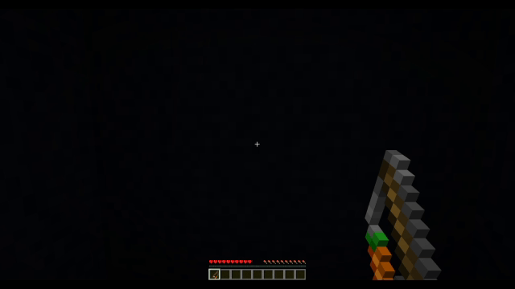

ตรวจจับคลิกขวาค้าง
เกี่ยวกับ
วิธีนี้ทำให้คุณตรวจจับการคลิกขวา "ค้าง" ของผู้เล่นตอนใช้ carrot on a stick
หมายเหตุ: ฉันขอเรียก "carrot on a stick" ว่า "coas" แทนนะ
ผลลัพธ์
ระบบการร่ายเวทย์ง่ายๆ จะทำการร่ายเวทย์เมื่อผู้เล่นคลิกขวาค้างไว้ระยะเวลาหนึ่ง

แนวคิด
การตรวจจับเมื่อผู้เล่นคลิกขวาคุณต้องรู้ว่าเมื่อใดที่ผู้เล่นคลิกขวาที่ coas สองครั้ง ในช่วงระยะเวลา
เพราะตัวเกมจะเก็บค่า coas ที่ส่งเข้ามาทุกๆ 4 ticks การคลิกขวาจะถือว่าต่อเนื่องหากคลิกต่อใน 5 ticksของคลิกอื่น
การใช้งาน
1. ติดตั้ง scoreboard objectives
#[ติดตั้ง]
#> objective นี้ใช้เพื่อตรวจจับเมื่อผู้เล่นกำลังคลิกขวา
scoreboard objectives add <coas> minecraft.used:minecraft.carrot_on_a_stick
#> objective จะมากกว่า 0 เสมอ เมื่อผู้เล่นคลิกขวาค้าง
#> เราสามารถใช้สิ่งนี้ตรวจจับเมื่อผู้เล่นกำลังคลิกขวา
scoreboard objectives add <timer> dummy
2. ตรวจจับคลิกขวา
#[หลัก]
execute if score @s <coas> matches 1.. run function [coas/reset_timer]
3. ตรวจจับการคลิกขวาค้าง
#[หลัก]
# ลด <timer> ลงหนึ่งจนกว่าจะเหลือ 0
scoreboard players remove @s[scores={<timer>=1..}] <timer> 1
# ถ้า <timer> มากกว่า 0 ทำให้เรารู้ว่าผู้เล่นมีการคลิกขวาในช่วง 5 ticks
# (เนื่องจาก <timer> จะลดลงทุก 1 tick และทุกครั้งที่มีการคลิกขวา <timer> จะเป็นค่า 5 อีกครั้ง)
execute if score @s <timer> matches 1.. run say Player is Holding Right Click!
#[coas/reset_timer]
# ตั้ง <timer> เป็น 5 และ <coas> เป็น 0
scoreboard players set @s <timer> 5
scoreboard players set @s <coas> 0
5. สรุป
ถ้า <timer> มากกว่า 0 ทำให้เรารู้ว่าผู้เล่นมีการคลิกขวาในช่วง 5 ticks ที่ผ่านมา <timer> จะลดลงทุกๆ 1 tick และทุกครั้งที่มีการคลิกขวา <timer> จะเป็นค่า 5 อีกครั้ง
เราสามารถใช้ execute if score @s <timer> matches 1.. เพื่อเช็คว่า <timer> มากกว่าหรือเท่ากับ 1.
หมายเหตุ
<...>คือกล่องค่าข้อมูลนั้นคุณต้องแทนที่มันด้วยค่าข้อมูลของคุณเอง[...]คือกล่องที่แทนการแสดงผลความสัมพันธ์ระหว่างฟังก์ชั่น
ดาต้าแพ็ค ตัวอย่าง
คุณสามารถโหลดได้ที่นี่ ดาต้าแพ็คตัวอย่าง
ดาต้าแพ็คนี้มีโค๊ดพิเศษที่ใช้ในการแสดง ข้อความ title ที่หน้าจอผู้เล่น
ขอให้มีความสุขกับการเขียนดาต้าแพ็ค!
- Cocoon